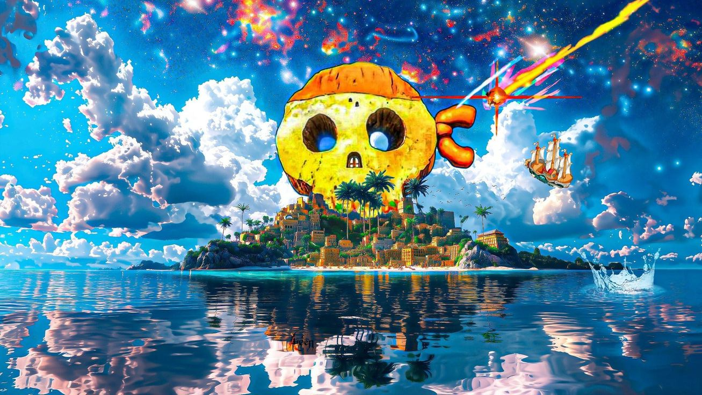

"One Piece" menceritakan perjalanan Monkey D. Luffy, seorang pemuda yang bermimpi menjadi Raja Bajak
Laut. Setelah memakan Buah Iblis Gomu Gomu no Mi, Luffy memperoleh kemampuan tubuh elastis seperti
karet. Luffy berlayar untuk menemukan harta legendaris bernama "One Piece," yang diyakini akan
memberinya gelar Raja Bajak Laut. Sepanjang petualangannya, Luffy merekrut kru dengan berbagai
kemampuan dan impian unik, seperti Zoro, Nami, Usopp, Sanji, dan lainnya, yang bersama-sama
membentuk Bajak Laut Topi Jerami.
Ceritanya dimulai di lautan East Blue, di mana Luffy mengumpulkan kru awalnya. Setelah itu, mereka
memasuki Grand Line, laut penuh bahaya di mana para bajak laut terbaik bersaing untuk mencapai "One
Piece." Di Grand Line, mereka terlibat dalam konflik besar dengan Pemerintah Dunia dan Angkatan
Laut, yang berusaha menjaga ketertiban dan menutupi rahasia sejarah dunia.
Setiap arc berfokus pada petualangan kru dalam menghadapi berbagai musuh kuat, seperti Shichibukai
(tujuh bajak laut terkuat yang bekerja untuk pemerintah), Yonko (empat kaisar bajak laut), dan
Tentara Revolusioner yang menentang Pemerintah Dunia. Mereka juga menjelajahi berbagai pulau dengan
budaya, ras, dan misteri unik. Salah satu tema penting dalam alur cerita adalah rahasia Abad
Kekosongan, periode sejarah yang dihapus oleh Pemerintah Dunia.
Arc besar seperti Alabasta, Enies Lobby, Marineford, dan Wano Country menggambarkan konflik besar
antara Bajak Laut Topi Jerami dengan kekuatan global, sekaligus memperdalam tema tentang kebebasan,
impian, persahabatan, dan perjuangan melawan penindasan. Pada akhirnya, tujuan Luffy tetap sama:
menemukan "One Piece" dan mewujudkan impiannya untuk menjadi Raja Bajak Laut, sebagaimana yang
didorong oleh Gol D. Roger, sang raja sebelumnya.